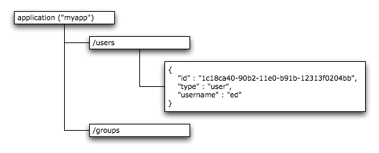

Overview and Key Concepts¶
This section provides an overview of the key concepts for using Usergrid.
Admin and Organization Accounts¶
When you signup up on the Usergrid.com site, you create an organization account for your company or team and an individual account for yourself that has admin rights to that organization. Your individual account can be a member of multiple organizations.
Administration Console¶
Once you create a account through the quick signup process, you’ll be presented with the Console. The Console is designed for team usage with a lightweight delegated administration capability. Different classes of administrative users will have access to different capabilities. For example, one common scenario is that you’ll be creating applications for a client who you will give sign-in access to. That client will only have the ability to see and potentially modify configuration settings for their application.
One important aspect of the Console that may not be immediately apparent tois that the entire Console is actually an HTML5/Javascript application that talks to the service via our public APIs. The Console is also the most complete reference application for using Usergrid from Javascript and is fully open source and forkable on GitHub at https://github.com/usergrid/console. This lets you easily extend it or embed it into your own applications and to inspect the code to see the recommend ways for interacting with our API. The Usergrid Javascript client is part of the Console project.
Applications¶
Typically, for every app that you build, you’d create a new Application within Usergrid, so that your app would have it’s own private space to store it’s objects and data. In some cases, if you had several apps that shared most of the same data and users, you might represent them in Usergrid as a single Application and the apps would share the data space.
Applications In the Console¶
The Application dashboard shows all of the information for an application. You can see activity level, total number of objects, objects created in the last day, week, and month, and other vital statistics for monitoring the health of your app as well as where you are within your quota limits.
Entities And Collections¶
In the Console, you’ll see the word “entities” in several places. This is the term that Usergrid uses for how it stores the objects it manages. Usergrid defines specific entity types and associated logic for these entities. However, you can also create your own, and, unlike records in conventional database tables, which have a very rigid schema which defines what can and can’t be stored in them and how they can be related to each other, Usergrid entities are very flexible in what they can store and how they can be connected. In this way, Usergrid is much better at managing data for modern applications with “social” features, where people, places, and content are connected together in whatever way is most appropriate from a user perspective.
Each entity has at minimum a unique UUID, and a type, which is a string such as “user”, “group”, or “location”. Your application also has a similar UUID, and when you access the system via the API, you’ll always provide the application UUID and typically the entity UUID of the entity you’re modifying or retrieving. Entities may also have one or more unique properties, like a name property, that can be used as alternate ways to retrieve an entity.
Here’s a very simple example of an entity:
{
"uuid" : "1c18ca40-90b2-11e0-b91b-12313f0204bb",
"type" : "user",
"created" : 1307415547108000,
"modified" : 1307415547108000,
"username" : "edanuff",
"email" : "ed@anuff.com",
"name" : "Ed Anuff"
}
In terms of what can be stored in properties, we’ve specifically focused on data that can be stored as JSON (JavaScript Object Notation), which is supported by almost all languages and can represent most types of data and content.
Pre-Defined Entity Types¶
For system-provided entities, Usergrid defines a schema, which specifies which core properties are defined, what types of values they can contain, whether they’re required, as well as indexed or unique. It also defines whether the entity has collections of other entities. This makes it possible for the service to make smart decisions about how to manage the data. However, Usergrid also allows you to assign your own custom dynamic properties, to the pre-defined entities. These properties can be anything you want, their contents are always indexed, and in all other ways can be used like the regular core properties. Further, although not a requirement, we do enable the uploading of custom schemas into the system.
Collections¶
Entities are stored in collections. For every entity type, there’s a root collection that contains all entities of that type. Root collections are automatically named for the plural form of the entity type. For example, an entity of type “user” are stored in the “users” root collection.
Some entities contain collections of other entities. For example, a group will contain a collection of the users in that group. Entities can be in more than one collection but are always members of the root collection for their entity type.
Collections can be searched and iterated through. Most predefined entity properties are indexed and all application-defined properties are indexed, allowing you to easily query collections.
Connecting Entities Together¶
One of the most powerful things about entities is that they can be connected together in a completely dynamic fashion. This eliminates much of the typical challenges of pre-defining relationships in a conventional database. Any two entities can be connected together with a specific connection type. For example, to emulate how Twitter does following of users, you’d connect two User entities together with a connection type of “follows”. The system organizes the data for fast queries against connections, so that, for example, to find all the other users that a user was following, under the hood the system would be doing a single “database read”. Of course, Usergrid manages this for you and in most cases you don’t need to worry about how expensive these types of operations are, because the system organizes the data for fast retrieval.
Messages, Events, and Activities¶
Most modern apps struggle to manage streams of data, whether they be content such as comments, activities, and tweets, or things like event logs for analytics. Mobile applications in particular are prone to generating very large amounts of this sort of data. In addition, this data often needs to be automatically routed to subscribers or filtered or counted.
Usergrid separates this type of data from the regular entities that it manages. This is because the volume of this data is significantly higher than that of all the rest of the data that an application manages. For example, at the time of this writing, it’s been reported in the press that Twitter has roughly as many Tweets on a daily basis as it has users since that service started. In Usergrid, we store activities and events into a highly scalable message queue system that is designed to keep up with very high rates of data.
The message queue can be used directly, and supports many of the standard types of operations found in enterprise message queue systems or services like Amazon’s SQS. However, we also create two higher-level mechanisms for using messages. The are Activities and Events.
Activities use the message queue capabilities under the hood to implement activity streams for your application. These are based on the Activity Streams specification at http://activitystrea.ms/. Activity distribution to followers and group members is automatically handled, so you don’t need to manually construct these as publish and subscribe relationships in the message queue.
Events are used for logging purposes in your application, and provide a simple way to sent data that you want to keep track of for business intelligence or analytics purposes.